Break out Manual
Werkzeugleiste / Symbol:


Menü: Modifizieren - Break out Manual
Tastenkürzel: B, 2
Kommandos: brk | b2
Beschreibung:
Teilt Objekte indem ein Segment zwischen zwei benutzerdefinierten
Punkten herausgeschnitten wird.
Vorgehensweise:
- Wählen Sie das Objekt, das Sie teilen möchten.
- Klicken Sie den ersten Punkt, an dem das Objekt aufgeteilt werden soll.
Wenn der Punkt nicht auf dem Objekt liegt, wird der Punkt als Trennpunkt
angenommen, der am nächsten zum gewählten Punkt und auf dem Objekt liegt.
- Klicken Sie den zweiten Punkt, an dem das Objekt aufgeteilt werden soll.
- Das Segment zwischen den zwei Punkten wird entfernt wenn die Option
"Segment entfernen" in der Optionenwerkzeugleiste aktiv ist. Sonst wird
das Objekt nur aufgetrennt.